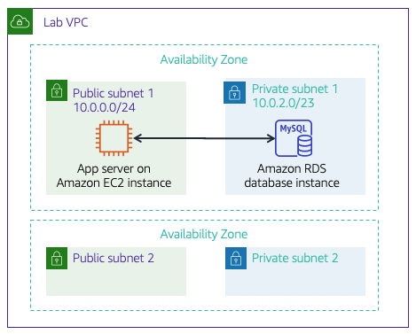

Traditionally, creating a database can be a complex process that requires either a database administrator or a systems administrator. In the cloud, you can simplify this process by using Amazon Relational Database Service (Amazon RDS).
After completing this lab, you should be able to:
At the end of this lab, your architecture will look like the following example:

#Duration
This lab will require approximately 20 minutes to complete.
In this lab environment, access to AWS services and service actions might be restricted to the ones that are needed to complete the lab instructions. You might encounter errors if you attempt to access other services or perform actions beyond the ones that are described in this lab.
At the top of these instructions, choose Start Lab to launch your lab.
A Start Lab panel opens, and it displays the lab status.
Tip: If you need more time to complete the lab, restart the timer for the environment by choosing the Start Lab button again.
Wait until the Start Lab panel displays the message Lab status: ready, then close the panel by choosing the X.
At the top of these instructions, choose AWS.
This action opens the AWS Management Console in a new browser tab. The system automatically logs you in.
Tip: If a new browser tab does not open, a banner or icon is usually at the top of your browser with the message that your browser is preventing the site from opening pop-up windows. Choose the banner or icon, and then choose Allow pop-ups.
Arrange the AWS Management Console tab so that it displays alongside these instructions. Ideally, you will have both browser tabs open at the same time so that you can follow the lab steps more easily.
Do not change the Region unless specifically instructed to do so.
In this task, you will create a MySQL database in your virtual private cloud (VPC). MySQL is a popular open source relational database management system (RDBMS), so there are no software licensing fees.
Windows Users: Use Chrome or Firefox as your web browser for this lab. The lab instructions are not compatible with Internet Explorer because of a difference in the Amazon RDS console.
On the Services menu, choose RDS.
Choose Create database
If the top of the screen shows Switch to the new database creation flow, choose it.
Under Engine options, select MySQL.
The options include several use cases, ranging from enterprise-class databases to Dev/Test systems. In the options, you might notice Amazon Aurora. Aurora is a MySQL-compatible system that was re-architected for the cloud. If your company uses large-scale MySQL or PostgreSQL databases, Aurora can provide enhanced performance.
Under the Templates section, select Dev/Test.
You can now select a database configuration, including software version, instance class, storage, and login settings. The Multi-AZ deployment option automatically creates a replica of the database in a second Availability Zone for High Availability. In this lab, however, keep the default Single DB instance setting.
Under the Settings section, configure these options:
DB instance identifier: inventory-db
Username: admin
Password: lab-password
Confirm password: lab-password
Under the DB instance class section, configure these options:
Select Burstable classes (includes t classes).
Select db.t3.micro
Under the Connectivity section, configure these options:
Virtual Private Cloud (VPC): Lab VPC
Existing VPC security groups: Choose DB-SG. It will be highlighted.
Expand the Additional configuration panel, then configure these settings:
Initial database name: inventory
Note: This is the logical name of the database that will be used by the application.
Clear (turn off) the Enable Enhanced monitoring option
Feel free to review the many other options displayed on the page, but leave them set to their default values. Options include automatic backups, the ability to export log files, and automatic version upgrades. The ability to activate these features through check boxes demonstrates the power of using a fully managed database solution instead of installing, backing up, and maintaining the database yourself.
Choose Create database (at the bottom of the page).
You should receive a message indicating that your database is being created.
If you receive an error message that mentions rds-monitoring-role, confirm that you have cleared (turned off) the Enhanced Monitoring option in the previous step, then try again.
Before you continue to the next task, the database instance status must be Available. This process might take several minutes.
This lab automatically deployed an Amazon Elastic Compute Cloud (Amazon EC2) instance with a running web application. You must use the IP address of the instance to connect to the application.
On the Services menu, choose EC2.
In the left navigation pane, choose Instances.
In the center pane, there should be a running instance that is named App Server.
Select the App Server instance.
In the Details tab, copy the IPv4 Public IP to your clipboard.
Tip: If you hover over the IP address, a copy icon appears. To copy the displayed value, choose the icon.
Open a new web browser tab, paste the IP address into the address bar, and then press ENTER.
The web application should appear. It does not display much information because the application is not yet connected to the database.
Choose Settings.
You can now configure the application to use the RDS DB instance you created earlier. You will first retrieve the Database Endpoint so that the application knows how to connect to a database.
Return to the AWS Management Console, but do not close the application tab. (You will return to it soon.
On the Services menu, choose RDS.
In the left navigation pane, choose Databases.
Choose inventory-db.
Scroll to the Connectivity & Security section and copy the Endpoint to your clipboard.
It should look similar to this example: inventory-db.crwxbgqad61a.rds.amazonaws.com
Return to the browser tab with the Inventory application, and enter these values:
inventoryadminlab-passwordThe application will now connect to the database, load some initial data, and display information.
Add inventory, edit, and delete inventory information by using the web application.
The inventory information is stored in the Amazon RDS MySQL database that you created earlier in the lab. This means that any failure in the application server will not lose any data. It also means that multiple application servers can access the same data.
Insert new records into the table. Ensure that the table has 5 or more inventory records before submitting your work.
You have now successfully launched the application and connected it to the database!
Optional: You can access the saved parameters in the Systems Manager console, under Parameter Store.
At the top of these instructions, choose Submit to record your progress and when prompted, choose Yes.
If the results don't display after a couple of minutes, return to the top of these instructions and choose Grades
Tip: You can submit your work multiple times. After you change your work, choose Submit again. Your last submission is what will be recorded for this lab.
To find detailed feedback on your work, choose Details followed by View Submission Report.
Congratulations! You have completed the lab.
Choose End Lab at the top of this page, and then select Yes to confirm that you want to end the lab.
A panel should appear with this message: DELETE has been initiated... You may close this message box now.
Select the X in the top right corner to close the panel.
©2021 Amazon Web Services, Inc. and its affiliates. All rights reserved. This work may not be reproduced or redistributed, in whole or in part, without prior written permission from Amazon Web Services, Inc. Commercial copying, lending, or selling is prohibited.